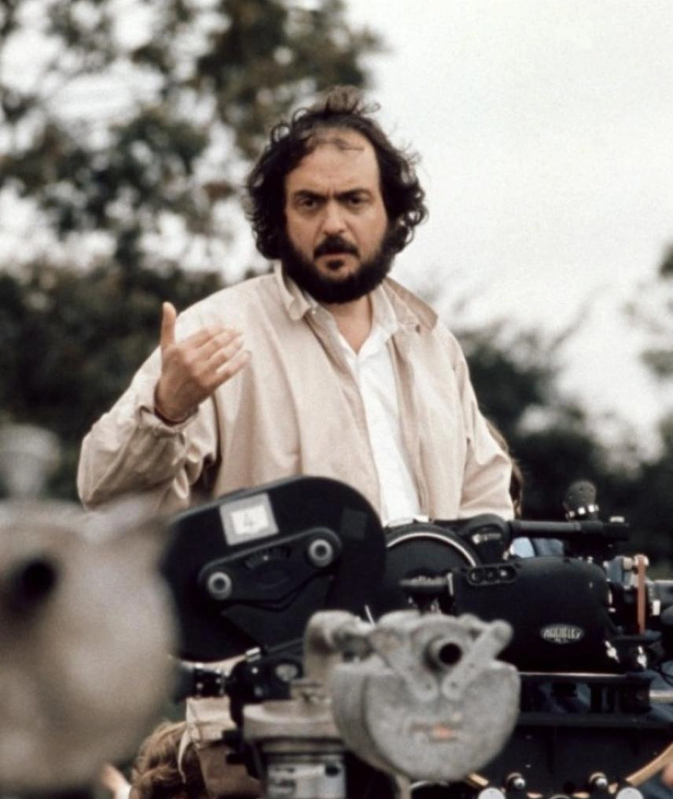

Stanley Kubrick fue un director de cine, productor y guionista estadounidense, considerado uno de los cineastas más influyentes del siglo XX. Nació el 26 de julio de 1928 en Nueva York y falleció el 7 de marzo de 1999 en Inglaterra. Su trabajo abarca una variedad de géneros y es conocido por su atención al detalle y su innovadora narrativa visual.
Kubrick comenzó su carrera en la fotografía antes de pasar al cine. A lo largo de su vida, dirigió películas icónicas que desafiaron las convenciones del cine tradicional. Su enfoque meticuloso y su estilo visual distintivo lo convirtieron en un referente en la industria cinematográfica.
